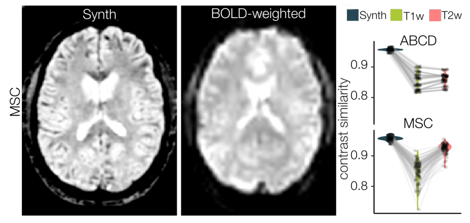
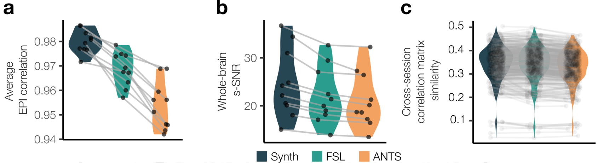

Using Synthetic Images for correcting geometric distortion in Brain MRI
I can honestly see this becoming the gold standard of distortion correction in the future...
Motivation
Echo Planar Imaging (EPI)
Single RF excitation pulse + Multiple Gradient Echos → High Temporal Resolution
EPI Sequence Diagram
Blood Oxygenation Level Dependent (BOLD) fMRI
Diffusion Tensor Imaging (DTI) MRI
EPI Signal Loss and Geometric Distortion
Long TE + Field Inhomogeneities → Phase Dispersion → Signal Loss and distortion due to Echo shift
Signal Dropout
Geometric Distortion
Correcting Geometric Distortion in EPIs
Field Maps: Map local inhomogeneities in the magnetic field
Field maps to correct distortion
Correct for distortion using measured field information.
If field map isn't present, distortion correction not possible (and is data unusable).
Extant datasets where field map was never collected.
Study designs where extra scan collection needs to be minimized.
Can we correct for distortion without field maps?
Synth
Key idea: Align directly to undistorted spin echo scans (structural T1/T2) to undistort the EPI.
Problem? Different contrast, Different signal!
Generate Synthetic Image with geometry of spin echo data, but contrast of EPI
Just non-linearly warp images!
How does it work?
Math and Paper Stuff goes here...
Some Technical Details
The omni registration library
Synth is built on omni, a custom python/C++17 neuroimaging registration library.
WIP Features:
- Auto-differentiation
- GPU optimization
Library follows modern software engineering practices:
- Automated Code Quality Reports
- Unit Testing
- Continuous Integration
Expanding the Capabilities of Synth
Three Key Areas
Three Key Areas
Diffusion Tensor Imaging

Tool for studying white matter tractography
Three Key Areas
Datasets with limited access to both T1/T2
Collection of both a T1 and T2 image in a study design may be time or cost prohibitive.
Image quality of one of the structurals may be poor.
Can we use Synth with just one structural?
EPI (BOLD)
Synthetic (T1/T2)

Synthetic (T2)
Synthetic (T1)
Three Key Areas
Multi-echo fMRI
Example of multi-echo data.
Avoid signal dropout by combining information from earlier echos.
Three Key Areas
Diffusion Tensor Imaging
Datasets with limited access to both T1/T2
Multi-echo fMRI
Specific Aims
Aim 1: Apply Synth field map-less EPI distortion correction to diffusion tensor imaging.
Aim 2: Extend Synth field map-less EPI distortion correction to in limited data settings.
Aim 3: Extend Synth to leverage multi-echo fMRI data to improve synthetic EPI image generation.
Aim 1: Apply Synth field map-less EPI distortion correction to diffusion tensor imaging.
Hypothesis 1a: A Synth model parameter tuned to DTI image contrast will generate a synthetic image of high contrast similarity to a DTI image.
Hypothesis 1b: By employing a synthetic DTI image as a non-linear registration target, there will be an improvement in global/local geometric correspondence between DTI and structural images.
Hypothesis 1c: A DTI-based Synth correction method will produce reduced variance in parameters of interest in DTI data with comparable outcomes to traditional field map methods.
Hypothesis 1a: A Synth model parameter tuned to DTI image contrast will generate a synthetic image of high contrast similarity to a DTI image.
Contrast similarity between synthetic and real EPI
Aim 1: Apply Synth field map-less EPI distortion correction to diffusion tensor imaging.
Hypothesis 1a: A Synth model parameter tuned to DTI image contrast will generate a synthetic image of high contrast similarity to a DTI image.
Hypothesis 1b: By employing a synthetic DTI image as a non-linear registration target, there will be an improvement in global/local geometric correspondence between DTI and structural images.
Hypothesis 1c: A DTI-based Synth correction method will produce reduced variance in parameters of interest in DTI data with comparable outcomes to traditional field map methods.
Hypothesis 1b: By employing a synthetic DTI image as a non-linear registration target, there will be an improvement in global/local geometric correspondence between DTI and structural images.
Local/Global metrics of image similarity
Aim 1: Apply Synth field map-less EPI distortion correction to diffusion tensor imaging.
Hypothesis 1a: A Synth model parameter tuned to DTI image contrast will generate a synthetic image of high contrast similarity to a DTI image.
Hypothesis 1b: By employing a synthetic DTI image as a non-linear registration target, there will be an improvement in global/local geometric correspondence between DTI and structural images.
Hypothesis 1c: A DTI-based Synth correction method will produce reduced variance in parameters of interest in DTI data with comparable outcomes to traditional field map methods.
Hypothesis 1c: A DTI-based Synth correction method will produce reduced variance in parameters of interest in DTI data with comparable outcomes to traditional field map methods.
Metrics measuring reliability of data
Synth correction on Primate DTI Data
Primate #1: Abita
Abita (T2)
Abita (Distorted B0)
Abita (Undistorted B0)
Abita (T2)
Primate #2: Bassador
Bassador (T2)
Bassador (Distorted B0)
Bassador (Undistorted B0)
Bassador (T2)
Primate #3: Cidre
Cidre (T2)
Cidre (Distorted B0)
Cidre (Undistorted B0)
Cidre (T2)
Specific Aims
Aim 1: Apply Synth field map-less EPI distortion correction to diffusion tensor imaging.
Aim 2: Extend Synth field map-less EPI distortion correction to in limited data settings.
Aim 3: Extend Synth to leverage multi-echo fMRI data to improve synthetic EPI image generation.
Aim 2: Extend Synth field map-less EPI distortion correction to in limited data settings.
Hypothesis 2a: A Synth model accounting for spatial information will allow for accurate synthetic EPI images generated from only a T1 or T2, with high contrast similarity to a target EPI image.
Hypothesis 2b: This modified Synth model will provide comparable EPI distortion correction to the original model Synth where both structural image types are available.
Hypothesis 2a: A Synth model accounting for spatial information will allow for accurate synthetic EPI images generated from only a T1 or T2, with high contrast similarity to a target EPI image.

Areas of mismatch modeled independently (T1).


Comparison of Original Intensity Mapping Model (left) to real EPI (right).
Comparison of Spatially Dependent Model (left) to real EPI (right).
Aim 2: Extend Synth field map-less EPI distortion correction to in limited data settings.
Hypothesis 2a: A Synth model accounting for spatial information will allow for accurate synthetic EPI images generated from only a T1 or T2, with high contrast similarity to a target EPI image.
Hypothesis 2b: This modified Synth model will provide comparable EPI distortion correction to the original model Synth where both structural image types are available.
Specific Aims
Aim 1: Apply Synth field map-less EPI distortion correction to diffusion tensor imaging.
Aim 2: Extend Synth field map-less EPI distortion correction to in limited data settings.
Aim 3: Extend Synth to leverage multi-echo fMRI data to improve synthetic EPI image generation.
Aim 3: Extend Synth to leverage multi-echo fMRI data to improve synthetic EPI image generation.
Hypothesis 3a: By combining information from multiple echos, Synth-based synthetic image generation will provide higher contrast similarity to it’s EPI target.
Hypothesis 3b: Recovery of signal lost from B0 inhomogeneities will improve local correspondence to structural images near foci of signal drop out.
Hypothesis 3a: By combining information from multiple echos, Synth-based synthetic image generation will provide higher contrast similarity to it’s EPI target.
Optimal Combination EPI
Synthetic

Optimal Combination (Left), Synthetic (Right)
Aim 3: Extend Synth to leverage multi-echo fMRI data to improve synthetic EPI image generation.
Hypothesis 3a: By combining information from multiple echos, Synth-based synthetic image generation will provide higher contrast similarity to it’s EPI target.
Hypothesis 3b: Recovery of signal lost from B0 inhomogeneities will improve local correspondence to structural images near foci of signal drop out.
Hypothesis 3b: Recovery of signal lost from B0 inhomogeneities will improve local correspondence to structural images near foci of signal drop out.

T2
Optimal Combination
Aim 3: Extend Synth to leverage multi-echo fMRI data to improve synthetic EPI image generation.
Hypothesis 3a: By combining information from multiple echos, Synth-based synthetic image generation will provide higher contrast similarity to it’s EPI target.
Hypothesis 3b: Recovery of signal lost from B0 inhomogeneities will improve local correspondence to structural images near foci of signal drop out.
Specific Aims
Aim 1: Apply Synth field map-less EPI distortion correction to diffusion tensor imaging.
Aim 2: Extend Synth field map-less EPI distortion correction to in limited data settings.
Aim 3: Extend Synth to leverage multi-echo fMRI data to improve synthetic EPI image generation.
Reliable alternative for distortion correction.
Specific Aims
Aim 1: Apply Synth field map-less EPI distortion correction to diffusion tensor imaging.
Aim 2: Extend Synth field map-less EPI distortion correction to in limited data settings.
Aim 3: Extend Synth to leverage multi-echo fMRI data to improve synthetic EPI image generation.
Reduced reliance on field maps!